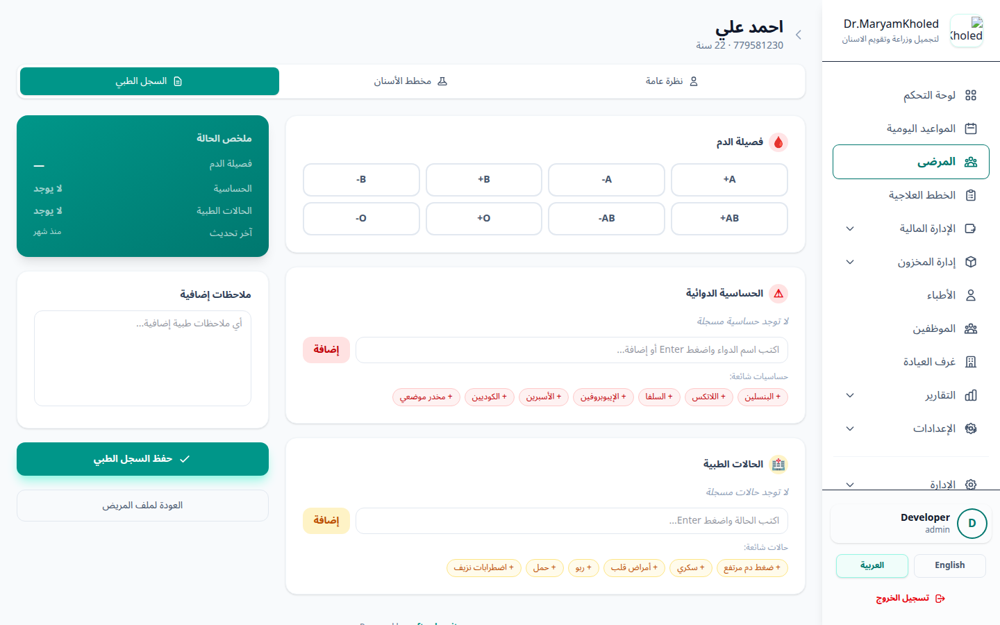

نظرة عامة والوصول للتبويبات
يوفر نظام DentalCare تبويبين متخصصين داخل ملف المريض لتوثيق حالته السنية والطبية بدقة: «مخطط الأسنان» (Dental Chart) لرسم خريطة بصرية تفاعلية لكل سن وحالته، و«السجل الطبي» (Medical History) لتوثيق الحساسية والأمراض المزمنة وفصيلة الدم. يساعد هذان التبويبان الطبيب على اتخاذ قرارات علاجية آمنة قبل البدء بأي إجراء.
- انتقل إلى قسم «المرضى» واختر المريض المطلوب لفتح ملفه الشامل.
- من شريط التبويبات أعلى الملف، اضغط على تبويب «مخطط الأسنان» للوصول إلى الخريطة السنية، أو على تبويب «السجل الطبي» لإدارة البيانات الطبية.
- ينتقل النظام بينك وبين تبويب «النظرة العامة» ومخطط الأسنان والسجل الطبي دون مغادرة ملف المريض.

اختيار نوع المخطط (بالغ / طفل)
يدعم المخطط نوعين من الأسنان بحسب عمر المريض: مخطط «البالغ» (Adult) الذي يعرض الأسنان الدائمة الـ 32، ومخطط «الطفل» (Child) الذي يعرض الأسنان اللبنية. يتم اختيار النوع المناسب قبل تسجيل حالات الأسنان لضمان ظهور أرقام الأسنان الصحيحة.
- من شريط التحكم أعلى المخطط، حدد بجوار خانة «نوع المخطط».
- اضغط على زر «بالغ» لعرض أسنان البالغين الدائمة، أو زر «طفل» لعرض الأسنان اللبنية.
- يتغير شكل الخريطة فوراً وتُحدّث أرقام الأسنان المعروضة، ويُحفظ اختيارك تلقائياً في الخلفية (AJAX) دون الحاجة لزر حفظ.

تسجيل حالة السن والأسطح والملاحظات
لُب مخطط الأسنان هو القدرة على النقر على أي سن في الخريطة لتسجيل حالته الطبية بشكل لوني واضح. تظهر كل حالة بلون مميز على الخريطة ليتمكن الطبيب من قراءة وضع الفم بنظرة واحدة.
- اضغط على رسم السن المطلوب في الفك العلوي أو السفلي على الخريطة، فتظهر نافذة منبثقة لتفاصيل السن مع رقمه ونوعه (قاطع، ناب، ضاحك، ضرس).
- اختر «الحالة» (Condition) من قائمة الحالات المتاحة (مثل: سليم، تسوّس، حشوة، تاج، علاج عصب، مخلوع، مفقود... إلخ). هذه القائمة تُعرَّف وتُدار من قسم «الإدارة» (حالات الأسنان)، ولكل حالة لون خاص يظهر في المفتاح أسفل المخطط.
- حدّد «الأسطح المصابة» (Surfaces) عند الحاجة — هذا الحقل اختياري ويسمح باختيار أكثر من سطح في نفس الوقت (مثل: M / D / O / B / L). أسطح الأسنان أيضاً تُعرَّف من قسم الإدارة.
- اكتب «الملاحظات» الطبية الخاصة بالسن إن وُجدت (حقل اختياري، بحد أقصى 500 حرف).
- اضغط على زر «حفظ» داخل النافذة المنبثقة.
سجل التغييرات على المخطط
لضمان الشفافية والمتابعة الطبية، يحتفظ النظام بسجل تدقيق كامل لكل تعديل يُجرى على أي سن في المخطط. يظهر هذا السجل أسفل الخريطة ويسرد آخر التعديلات بالترتيب الزمني.
- انزل أسفل خريطة الأسنان لتجد قسم «سجل التغييرات» (يظهر فقط عند وجود تعديلات سابقة).
- يعرض كل سطر رقم السن، والانتقال من الحالة السابقة → الحالة الجديدة، والأسطح المصابة بين قوسين (إن وُجدت)، وأي ملاحظات مرتبطة.
- يُسجَّل في الجهة المقابلة اسم المستخدم (الطبيب) الذي أجرى التعديل وتاريخ ووقت التعديل بدقة.
السجل الطبي للمريض
يوثّق تبويب «السجل الطبي» المعلومات الصحية الحساسة للمريض التي يجب على الطبيب مراجعتها قبل أي علاج، مثل حالات الحساسية الدوائية والأمراض المزمنة. عند تسجيل أي حساسية، يعرض النظام بانر تنبيه أحمر بارزاً أعلى ملف المريض في جميع التبويبات.
- افتح تبويب «السجل الطبي» داخل ملف المريض.
- حدّد «فصيلة الدم» (Blood Type) بالضغط على الخيار المناسب من الأزرار (A+, A-, B+ ... O-). الحد الأقصى لطول هذا الحقل 5 أحرف.
- أضف «الحساسية» (Allergies): اكتب اسم الحساسية ثم اضغط Enter أو زر «إضافة» لإضافتها كوسم، أو اختر من قائمة الحساسيات الشائعة بضغطة واحدة. يمكنك إضافة عدة وسوم (تُحفظ مفصولة بفواصل).
- أضف «الأمراض / الحالات المزمنة» (Medical Conditions) بنفس طريقة الوسوم (مثل: السكري، الضغط، أمراض القلب)، أو اختر من قائمة الحالات الشائعة.
- اكتب أي «ملاحظات إضافية» في الحقل المخصص (اختياري، بحد أقصى 2000 حرف).
- اضغط على زر «حفظ السجل الطبي».
